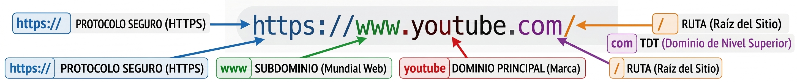
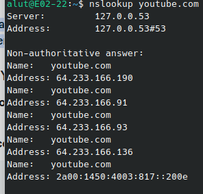
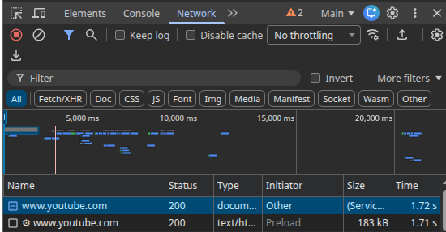
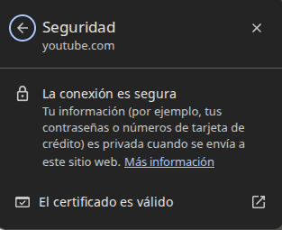
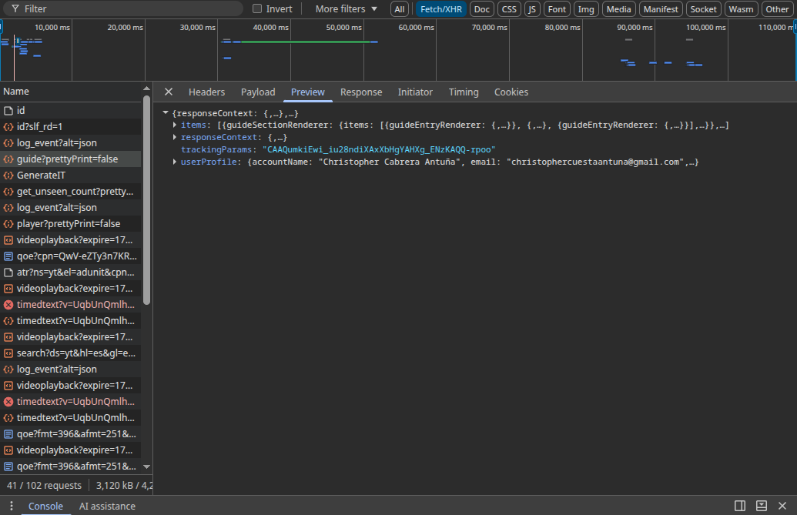

La web que he elegido
He elegido YouTube porque permite ver cómo funciona una web dinámica: reproduce vídeos y adapta su contenido a las búsquedas y preferencias de cada usuario.
Glosario
| Término | Definición con mis palabras | Ejemplo en mi web |
|---|---|---|
| Cliente | Es el programa o dispositivo que solicita información o servicios a un servidor; normalmente, el navegador. | Al abrir YouTube, mi navegador actúa como cliente y solicita la página y los vídeos que quiero ver. |
| Servidor | Es un equipo que recibe solicitudes de otros dispositivos y les envía datos o servicios. | Los servidores de YouTube reciben las solicitudes del navegador y envían la página, los datos y el vídeo solicitado. |
| Servidor web | Es el programa que recibe peticiones HTTP y entrega páginas y otros recursos web. | Al abrir youtube.com, el servidor web responde con los recursos necesarios para mostrar la página. |
| Apache | Es un programa servidor web de código abierto que puede alojar sitios y atender peticiones HTTP. | No se puede confirmar desde la página si YouTube usa Apache; el servidor web que utiliza es un detalle interno. |
| URL | Es la dirección completa que indica cómo y dónde encontrar un recurso en Internet. | https://www.youtube.com/watch?v=VIDEO_ID es un ejemplo de URL para abrir un vídeo. |
| Protocolo | Es un conjunto de reglas que permite que los dispositivos se comuniquen. | En https://www.youtube.com, HTTPS indica el protocolo seguro usado para acceder a YouTube. |
| Dominio | Es el nombre legible que identifica un sitio en Internet y que el DNS relaciona con una dirección IP. | En https://www.youtube.com, el dominio es www.youtube.com. |
| Ruta | Es la parte de la URL que indica un recurso o sección dentro del sitio. | En https://www.youtube.com/watch?v=VIDEO_ID, /watch es la ruta que identifica la página del reproductor. |
| Dirección IP | Es un número que identifica un dispositivo o servidor dentro de una red. | Al ejecutar nslookup www.youtube.com, se consultan las direcciones IP asociadas al dominio. |
| DNS | Es el sistema que busca la dirección IP asociada a un nombre de dominio. | Antes de conectar con www.youtube.com, el navegador consulta el DNS para encontrar una dirección IP del servicio. |
| HTTP | Es un protocolo que permite intercambiar peticiones y respuestas entre el navegador y un servidor web. | YouTube usa el protocolo HTTP para las peticiones y respuestas; al navegar de forma segura, la conexión va protegida con HTTPS. |
| HTTPS | Es HTTP protegido mediante cifrado TLS, que ayuda a mantener privada e íntegra la comunicación. | La dirección https://www.youtube.com y el indicador de conexión segura del navegador muestran que se usa HTTPS. |
| Puerto | Es un número que identifica el servicio de red al que se dirige una conexión dentro de un equipo. | La conexión HTTPS con YouTube suele usar el puerto 443, aunque no aparezca en la barra de direcciones. |
| Petición | Es el mensaje que envía un cliente a un servidor para solicitar un recurso o realizar una acción. | Al abrir un vídeo, el navegador envía peticiones a YouTube para cargar la página y reproducir el contenido. |
| Respuesta | Es el mensaje que devuelve el servidor al cliente después de procesar una petición. | Al solicitar un vídeo, YouTube responde con los datos y recursos necesarios; la pestaña Red del navegador permite inspeccionar esas respuestas. |
| Código de estado | Es un número incluido en una respuesta HTTP que informa del resultado de la petición. | En la pestaña Red, puedo comprobar el código de cada petición a YouTube: por ejemplo, 200 suele indicar éxito y 404 que no se encontró ese recurso. |
| Web estática | Es una web que entrega archivos cuyo contenido no se genera de nuevo para cada visitante. | YouTube no es solo una web estática: aunque utiliza archivos estáticos como imágenes, también genera y actualiza contenido según cada usuario. |
| Web dinámica | Es una web cuyo contenido puede generarse o cambiar según los datos, las acciones o el usuario. | YouTube es dinámica: muestra recomendaciones y resultados de búsqueda, y actualiza el reproductor cuando elijo otro vídeo. |
| PHP | Es un lenguaje de programación que se ejecuta habitualmente en el servidor y puede generar páginas web. | No se puede confirmar desde la página si YouTube utiliza PHP; el lenguaje empleado en sus servidores no se deduce de lo que aparece en el navegador. |
| Base de datos | Es un sistema organizado para guardar, consultar y modificar información. | YouTube necesita almacenar información como vídeos, canales y comentarios; desde la página no se puede saber qué tecnología de base de datos utiliza. |
| LAMP | Es una combinación de Linux, Apache, MySQL o MariaDB y PHP, usada para alojar aplicaciones web. | No se puede afirmar que YouTube use LAMP: para saberlo habría que conocer los sistemas operativos y programas instalados en sus servidores. |
| JSON | Es un formato de texto sencillo para representar e intercambiar datos estructurados. | Algunas peticiones de datos de YouTube pueden inspeccionarse en la pestaña Red; si una respuesta está en JSON, se verá como datos organizados en pares de nombre y valor. |
| XML | Es un formato de texto que organiza datos mediante etiquetas descriptivas. | XML organiza datos con etiquetas, por ejemplo <video><titulo>Mi vídeo</titulo></video>. No se puede asegurar que la página abierta de YouTube use XML sin inspeccionar una respuesta que lo contenga. |
Evidencias




